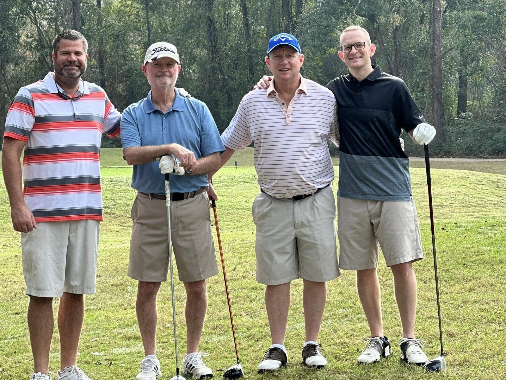
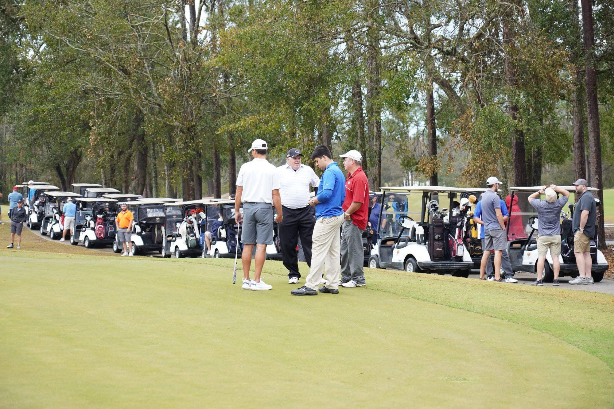
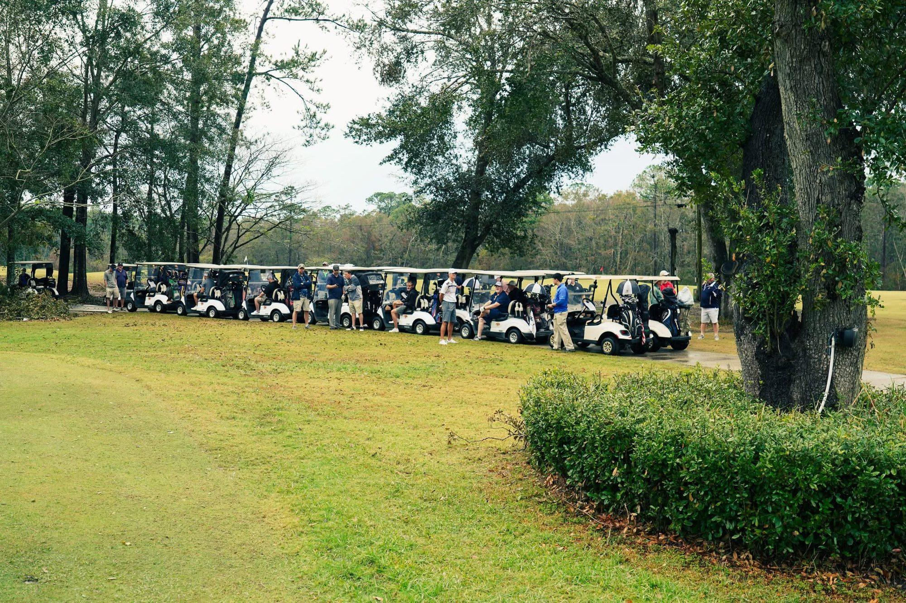

Our biggest fundraiser of the year
11th Annual Joseph’s Home Golf Tournament
Saturday, November 7, 2026. Shotgun start at 8:00 a.m. A four-person scramble at Grand Bear in Saucier, Mississippi. One day on the course pays for months of beds, meals, and discipleship — this is the single most useful thing most people can do for this house all year.
The details
- Date — Saturday, November 7, 2026
- Start — 8:00 a.m. shotgun start
- Format — four-person scramble
- Course — Grand Bear Golf Course, 12040 Grand Way Blvd, Saucier, MS 39574
- Contest prizes — hole-in-one car prize, closest to the pin, long drive, and more
Eleven years in, this tournament has raised more than $100,000 and drawn over 200 golfers. It is our only fundraiser of the year, and the house runs on what it brings in.
Teams register as a foursome. Companies, churches and families all field one — you do not need to be a golfer to belong here, and nobody is keeping score that closely.
Five ways in
However you show up, it pays for a bed.
- Register a foursome — the simplest way in
- Sponsor a hole — your name on the course all day
- Donate a raffle item or a prize for the auction
- Volunteer on the day — registration, spotting, cleanup
- Bring your company — team building that pays for a bed
From the course


